今年是“六四事件”30周年（这话，俺已经在博客上唠叨好几次了）。
估计某些读者希望俺在6月4日那天发这篇纪念的博文。但考虑到【翻墙】的优先级比较高，俺先发了那篇《翻墙快报》；最近这几天，GFW 封锁的力度已经降低，这时候再来发六四的纪念博文，效果会比较好（可以让更多人看到）。
（编程随想注：这篇文章的照片较多；为了照顾那些翻墙不太顺畅的读者，俺只挑选其中一部分照片）
（编程随想注：引文中的粗体是俺标注滴）
（编程随想注：以下是此文的摘录和部分照片）
（编程随想注：以下是此文的摘录和部分照片）
（编程随想注：以下是此文的摘录和部分照片）
（编程随想注：以下是声明的全文）
（编程随想注：以下是此文的摘录）
（编程随想注：以下只贴出照片）
（编程随想注：以下是此文的摘录）
编程随想注：
经典的政治小说《1984》里面有句名言——
（编程随想注：引文中的粗体是俺标注滴）
（编程随想注：以下是此文的摘录，引文中的粗体是俺标注滴）
（编程随想注：以下是此文的摘录，引文中的粗体是俺标注滴）
（编程随想注：以下是此文的摘录）
俺博客上，和本文相关的帖子（需翻墙）：
《回顾“六四”》（系列）
《谈革命》（系列）
《每周转载：“六四事件”25周年纪念（【大量】照片和网友评论）》
《每周转载：“六四事件”23周年纪念（网文4篇）》
《处在历史转折点的小人物们——回首80年代的几则往事》
估计某些读者希望俺在6月4日那天发这篇纪念的博文。但考虑到【翻墙】的优先级比较高，俺先发了那篇《翻墙快报》；最近这几天，GFW 封锁的力度已经降低，这时候再来发六四的纪念博文，效果会比较好（可以让更多人看到）。
★回首往事，历历在目
◇《封藏30年的“六四”照片公诸于世 @ 纽约时报》
（编程随想注：这篇文章的照片较多；为了照顾那些翻墙不太顺畅的读者，俺只挑选其中一部分照片）
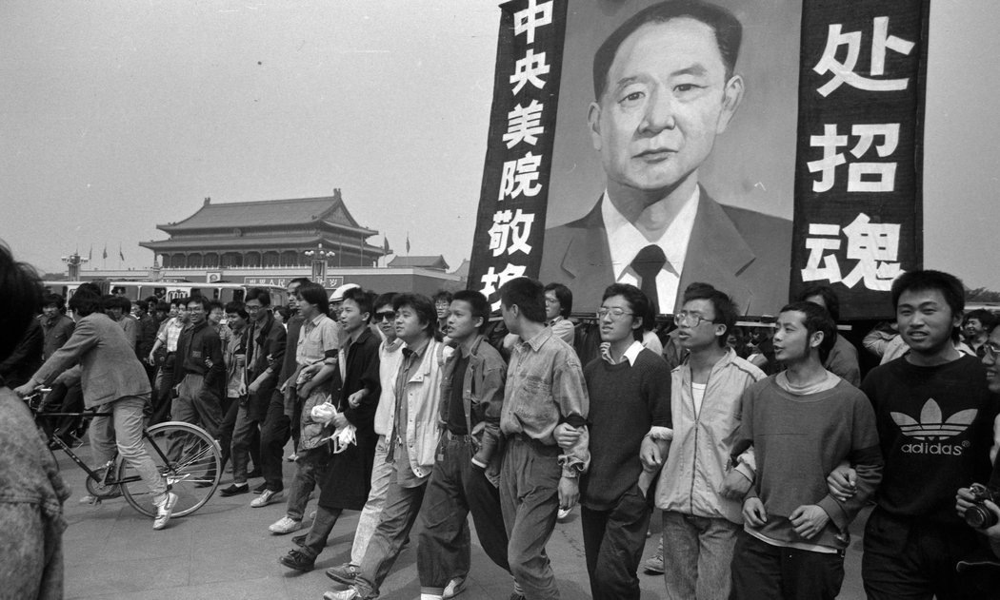
（1989年4月，北京高校学生在天安门广场纪念中共总书记、政治改革者胡耀邦去世，自此拉开了要求民主的抗议活动的序幕。Jian Liu）
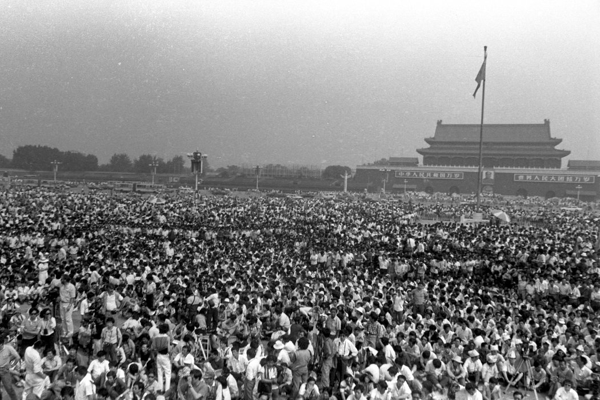
（5月，抗议活动持续进行，吸引了成千上万人，这是一些电视台报道画面。Jian Liu）
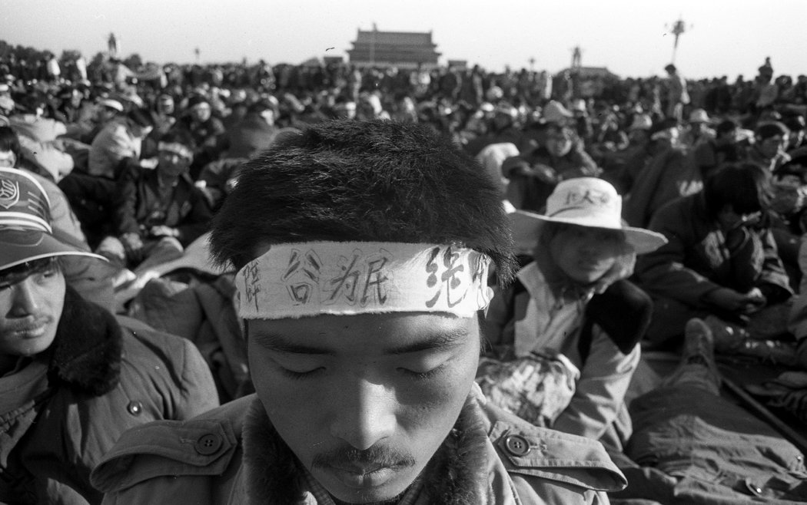
（绝食抗议的一名学生。Jian Liu）
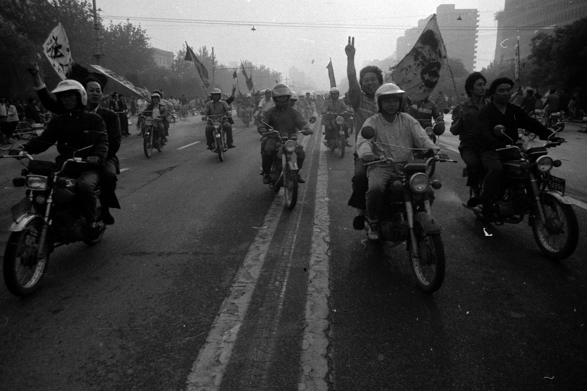
（5月中旬，被称为“飞虎队”的摩托车队举行游行，支持学生运动。Jian Liu）
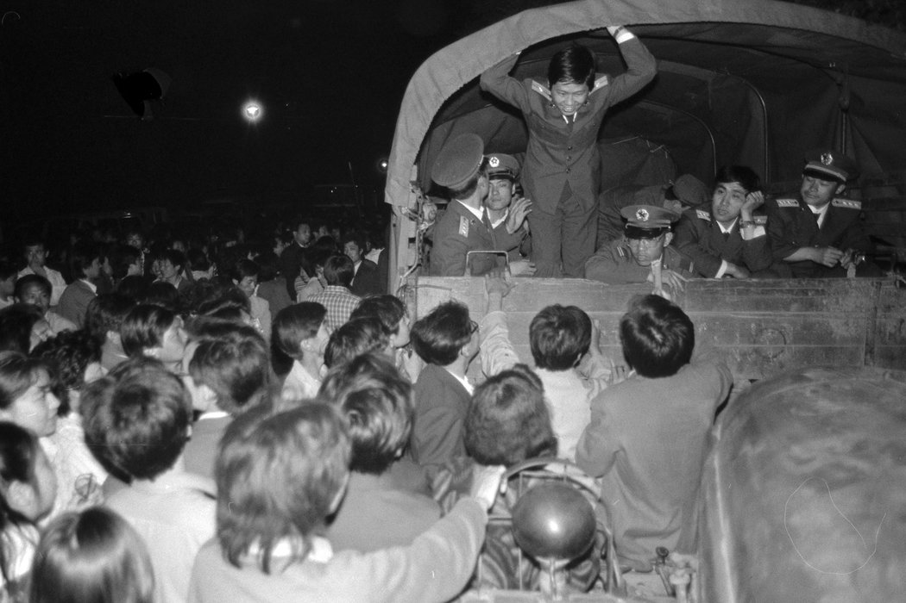
（5月底，第一批进城戒严的非武装士兵被市民拦截。市民向他们解释学生为什么举行抗议活动，这支部队撤离了。Jian Liu）
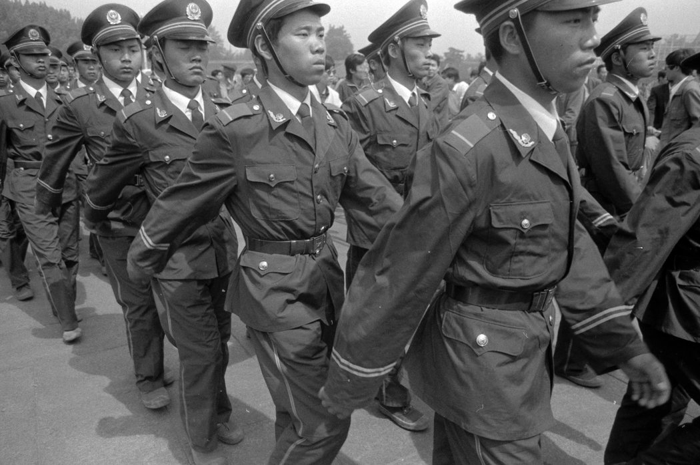
（5月中旬，行进的武警。他们接到命令，要不择手段清理广场。Jian Liu）
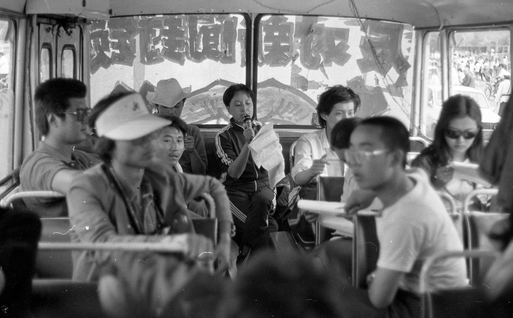
（这是北京高校学生自治联合会的宣传车，是学生们当时对外发布信息的中心。Jian Liu）
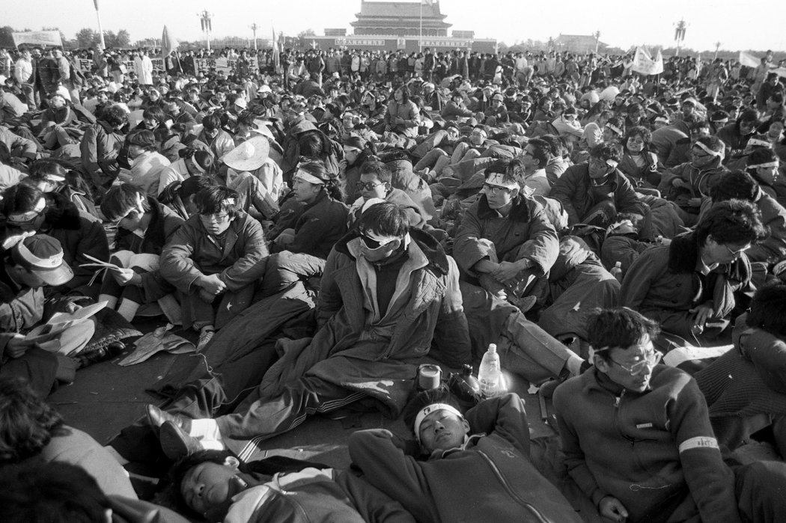
（5月中旬，学生绝食了大约一周后。Jian Liu）
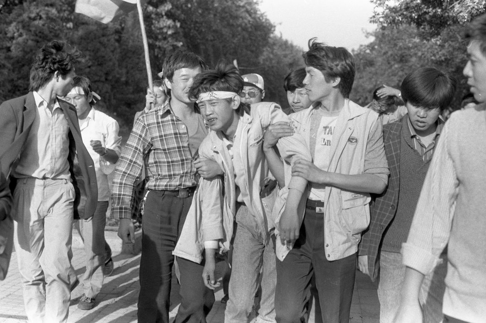
（同伴搀扶一名绝食的学生。Jian Liu）
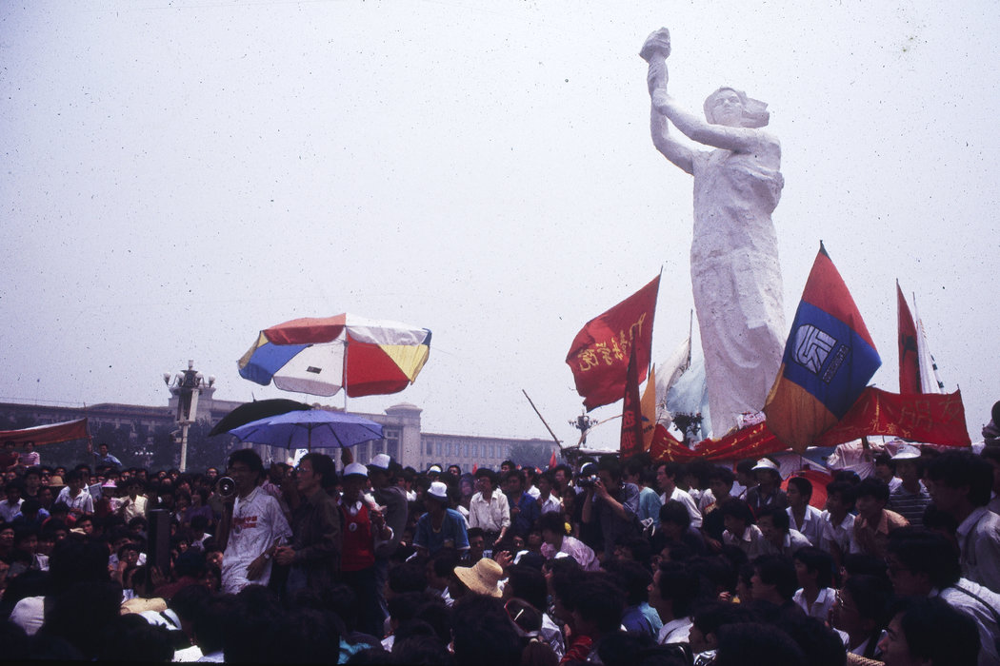
（5月底，学生在天安门广场刚刚搭建好民主女神像。Jian Liu）
（5月，西长安街上被烧毁的军车。纵火者身份不详。Jian Liu）
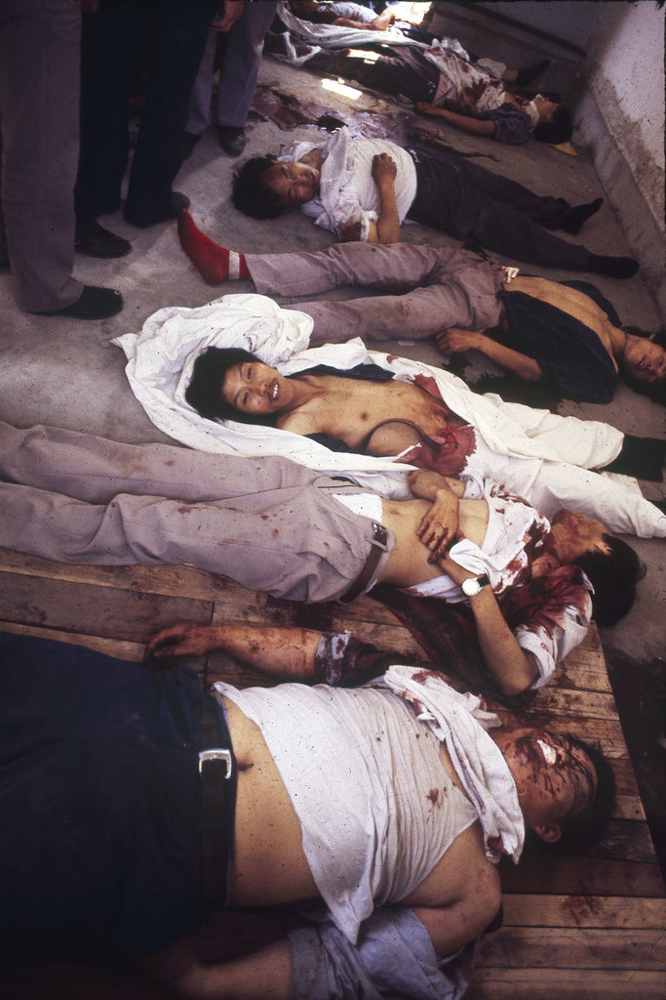
（水利医院的停尸房。这些人都是被子弹击中身亡，照片摄于死者去世后不久。Jian Liu）
◇《法国前驻华大使马腾回忆“六四”所见所闻 @ RFI/法广》
（编程随想注：引文中的粗体是俺标注滴）
中国六四事件30周年前，法国《世界报》刊登文章，介绍前法国驻华大使 Claude Martin 马腾对天安门事件的回忆说：那晚他“听到了冲锋枪的声音”、“看到了马路边躺着一些人”，听现场民众讲述“军队向楼房扫射”。
香港《苹果日报》引述该文说：1989年6月3日下午6点，时任法国外交部亚洲司司长马腾前往北京公干。当晚，他和《世界报》驻华记者 Francis Deron，以及一位朋友从王府井背面进入天安门广场。
马腾说：“长安街上到处都是坦克，广播在高喊，离开广场，政府禁止在广场逗留，否则后果自负”。广场上，马腾看到众多身着白色服装的学生们，头部绑着“我们要民主，我们要自由”的布条。
“那些身着白色服装的学生，是准备牺牲的。他们所有的人，所有的，都认为今晚的结局将会很难”。马腾说。
当天夜间，海淀开始枪杀的消息传到了广场。“之后，我们真的就听到了枪声。”马腾说。当时广场上和马腾交流的学生希望他能留下来，见证发生的事情。但他被人群中的便衣警察强行拉走。接近零时，马腾返回法国使馆。
“我听到了冲锋枪的声音，甚至在使馆！使馆在15公里之外，我们都能听到”。马腾说，这个枪声让他无法入眠。6月4日凌晨，马腾在齐家园外交公寓上看到长安街的部分路段：“从高处，我看到了马路边躺着一些人，但不知道死活”。
在木樨地的一些朋友们告诉马腾，他们看到军队前进的场面，“他们甚至朝楼房扫射，朝阳台上的人开枪。他们给我看了照片。我们都知道，这是事实，这点没有任何疑问”。
在天安门屠杀事件的几个月之后，马腾出任法国驻华大使。对于30年后的中国，马腾认为，“中国封闭又倒退”且“非常专制”，“一个政权以这种方式运作，显示了这个政权实际上对自己没有完全的自信”。
◇《美联社忆“六四”：戒严部队围攻外国记者 @ RFA/自由亚洲电台》
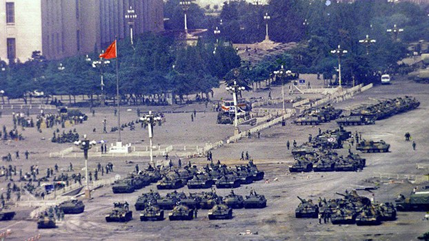
（资料图片：1989年6月5日集中在北京街头的中国军队坦克。美联社）
“六四”事件30周年之际，多家国际媒体回顾了当年的报道，试图再次展现那一晚究竟发生了什么。美联社周三重发了1989年6月6日的报道，记录了天安门广场清场当晚戒严部队殴打、拘留外国记者的行为。
不同统计数据显示，有数百名到数千名中国普通民众因“六四”事件在北京市区丧生。时任美国驻华大使馆武官伍尔泽（Larry Wortzel）周二在美国詹姆斯敦基金会（Jamestown Foundation）的网站上发文说，一名隶属中国红十字会的医生在“六四”事件发生当天告诉美国驻华大使馆，有大概两千六百人因此遇难。
另外，美联社周三重新发布的这篇三十年前的报道细数了外国记者在报道六四镇压期间的遭遇。报道说，戒严部队当晚清场期间用子弹击中了一名日本记者的脚和一名法国记者的后背。这两名记者当时都在人群当中。
此外，一名英国路透社记者被蒙住眼睛，并被扣留了六个小时。至少有六名摄影记者的设备被戒严部队没收或损毁。
美国哥伦比亚广播公司的一名记者和他的摄影师在直播过程中被好几位士兵干扰，之后被施以拳脚。这两位新闻工作者后来被拘留了大约二十个小时。
（美国《华盛顿邮报》记者邵德廉/Dan Southerland 摄于1989年学运期间的北京。Muriel Southerland）
英国《独立报》的一名记者表示，他被一帮武警“恶棍”围殴。其中一人拿枪对准他的脑袋，命令他举起手来，之后他们就用棍棒和飞腿攻击他，直到他虚脱为止。此后，他又被扣押了两个小时才得以离开。
“六四”事件前夕，有几百名外国记者在北京报道前苏联领导人戈尔巴乔夫（Mikhail Gorbachev）访华。中国政府在5月20日对北京市部分地区实行戒严后，外媒被禁止与当地群众谈论他们对戒严令的看法，但这些记者基本没有理会这条采访限制。
◇《永志不忘——六四30年，前军官回忆天安门屠杀 @ 纽约时报》
（编程随想注：以下是此文的摘录和部分照片）
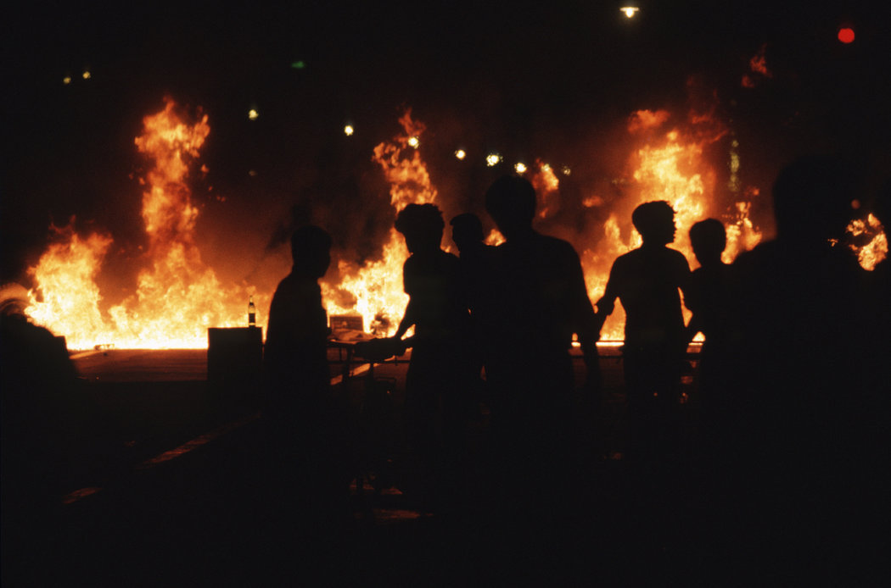
（1989年6月4日，北京天安门广场镇压当晚被点燃的车辆。
Peter Charlesworth/LightRocket, via Getty Images）
北京——30年来，对于自己在军队开进北京、镇压天安门广场学生抗议活动那一晚所看到的屠戮，江林一直保持沉默。但记忆折磨着她——士兵在黑暗中朝人群开枪，一具具躯体倒在血泊中，还有她在广场附近被士兵打倒在地时，棍棒发出的闷响。
江林当时是人民解放军的一名中校，她不仅目睹了那场大屠杀，还看到了众将领如何徒劳地劝说中国领导人不要用军队镇压亲民主抗议者。那之后，当局把抗议者关进监狱，抹去杀戮的记忆，她虽只字不提，却一直受着良心的谴责。
如今，在1989年6月4日镇压事件30周年即将来临之际，66岁的江林终于下定决心要说出她的故事。她说她觉得必须呼吁进行一场公开的清算，因为，包括习近平主席在内的数代中国共产党领导人，对这场暴力事件从未表达过任何悔过之意。江林本周离开了中国。
“那种痛苦已经折磨我30年了，”她在北京接受采访时说。“所有参与的人都应该把自己知道的事情说出来，我觉得这样对死者、对生者、对未来的孩子都是一个责任。”
江林的陈述有着更广泛层面的意义：她进一步揭示军队将领曾如何抵制武力清场的命令，他们此前已控制广场数周，引发了全世界的关注。
她提到自己曾参与传达几名高级将领的一封信，信中表达了对戒严令的反对，另外她还透露了其他一些指挥官的信函细节，劝谏领导层不要在北京动用军队。她曾在街上亲眼目睹士兵们急于夺回对天安门广场的控制，开始执行中共下达的命令，向人群肆意射击。
尽管已经过去30年，这场大屠杀仍是中国政治中最敏感的话题之一，当局为将其从历史中抹除付诸了持久努力，并且在很大程度上取得了成功。中共无视各方一再的呼吁，拒不承认肆意射杀学生和市民是错误的，也不愿对死者人数进行全面的统计。
当局会定期拘捕昔日的抗议领导人，以及镇压中遇害的学生和市民的父母。中国西南部某法院今年将四名男子定罪，原因是他们售卖了指涉天安门镇压事件的白酒。
多年来，不多的几位中国历史学家、作家、摄影师和艺术家曾努力将中共想要人们忘记的这部分历史记载下来。
但江林做出挑战这种沉默的决定，还承载着另外一层政治指控，因为她不仅是一名老兵，也是军中权势人物之女。她的父亲是位将军，她从小生长在军队大院。大约50年前，她自豪地加入了中国人民解放军，成为一名军旅记者，在那段时期的照片里，身着绿军服的她精神饱满地站立着，手拿笔记本，脖子上挂着照相机。
江林说，她从未想象过军队会把枪口指向手无寸铁的北京民众。
“怎么突然一天就变天了，就是你能够开着坦克、拿着机关枪向老百姓扫射？”她说。“我想简直是疯了。”
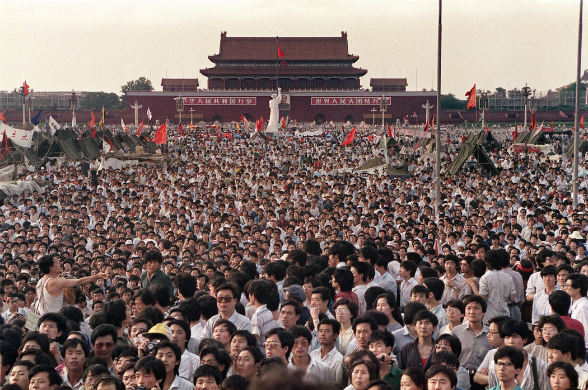
（1989年6月2日，天安门广场。 Catherine Henriette/Agence France-Presse — Getty Images）
江林现居国外，她之前在《解放军报》的上级钱钢证实了江林讲述的细节。江林分享了数百页发黄的稿件，包括一部回忆录和日记，都是她在苦苦思索这场屠杀的根由的过程中写下的。
“我不止一次地幻想，我穿着丧服走向了天安门，在那里，我献上了一束洁白的马蹄莲花，”她1990年写道。
......
赫赫有名的第38集团军军长徐勤先将军，曾拒绝在无明确书面指令的情况下率部队入京，并且选择住进了医院。七位将领签署了反对戒严的联名信，并呈交给掌管军队的中央军事委员会。
“信是很简单，”她形容这封信说。“人民解放军是人民的军队，不要进城，不要向老百姓开枪。”
江林急切地想把将军联名信的消息散发出去，于是通过电话将信函内容读给了中共主要报纸《人民日报》的一名编辑，这家报社当时正顶着上级的命令发布有关抗议活动的消息。但因签署联名信的其中一位将军表示反对，称此信本不打算公之于众，报社就没有刊载。
此时江林仍希望，军队内部的反对呼声能使邓小平打消派兵清场的念头。但在6月3日，她听说部队正从北京城西侧进入，并在射杀民众。
军队于6月4日接到了动用一切手段清场的命令。官方发出公告，警告居民留在家中。
......
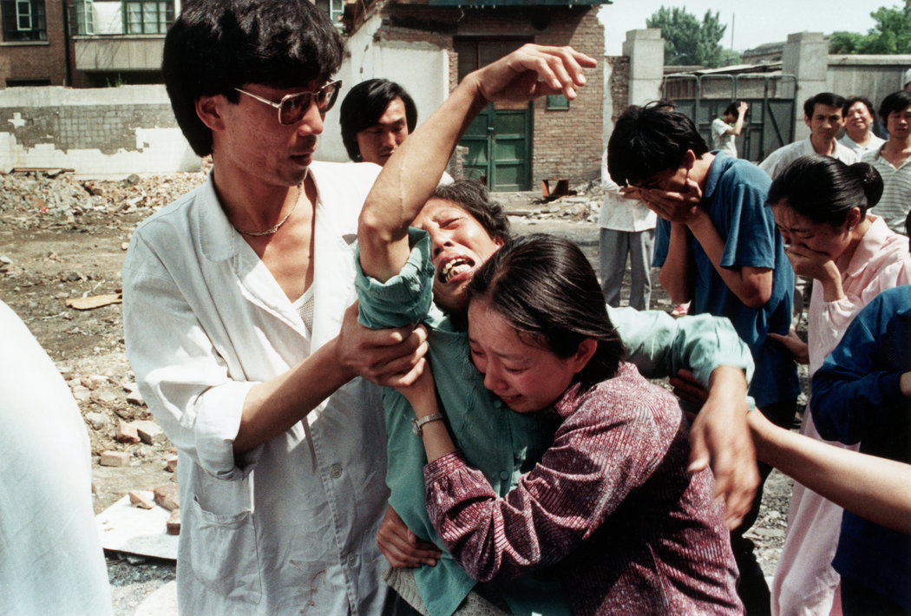
（家人在安慰一个刚刚得知儿子死讯的女人，她的儿子是一名学生抗议者，在天安门大屠杀中被士兵杀害。
David Turnley/Corbis, via Getty Images）
她骑着自行车进入市区看部队进城的情形，她知道，这场冲突将成为中国历史上的一个转折点。她知道自己可能会被误认为是抗议者，因为她穿着便服。但是她说，在那天晚上，她不想被认出是军人。
“这个是我的责任，”她说。“我是专门报道突发的重大新闻的。”
江林尾随士兵和坦克开进北京市中心，他们冲破了由公交车组成的临时路障，恣意射杀已被政府动武行为激怒的群众。
江林匍匐在地，子弹从头顶飞过，她的心怦怦直跳。枪炮声和油箱爆炸声响彻天际，她的脸能感受到燃烧的公交车吐出的热浪。
接近午夜时分，江林逐渐接近天安门广场，熊熊火光前站着一个个士兵的身影。一个上年纪的门卫恳求她不要再往前走了，但江林说她想看看会发生什么。突然，十几名武警向她逼近，有几个人用电棒殴打她。鲜血从她的头上涌出，江林摔倒了。
不过，她并没有亮明自己的军事记者身份。
“我今天不是解放军，”她想。“我今天就是老百姓。”
江林说，一个年轻人扶着她上了自行车，把她带走，一些外国记者迅速送她去了附近的一家医院。医生缝合了她头部的伤口。茫然中，她看到数十名死伤者被送到医院。
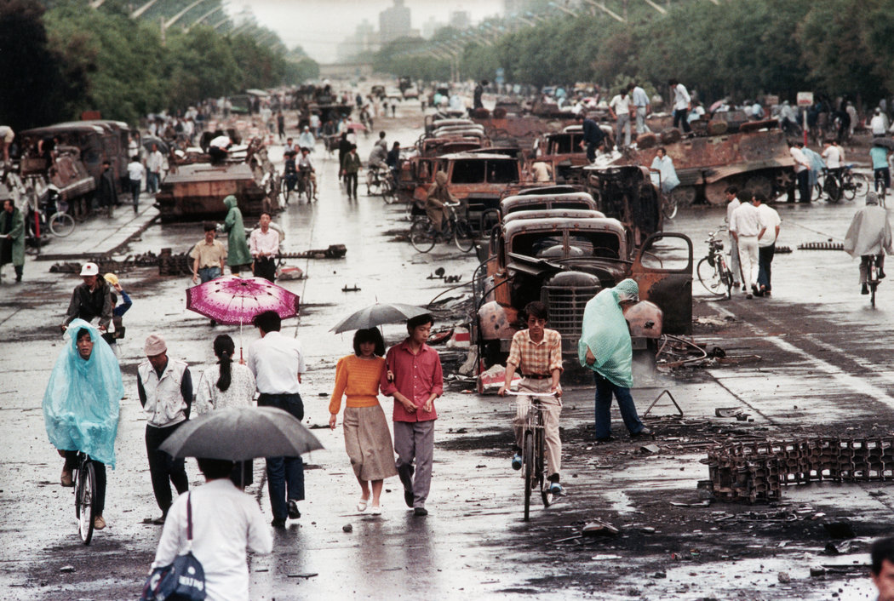
（大屠杀次日，天安门广场一侧的长安街。整条街上满是被愤怒民众烧毁的军车。
David Turnley/Corbis, via Getty Images）
那天晚上的暴行让她震惊不已。
“我当时就觉得就是让我看我母亲被人强奸的那种感觉，”她说。“我根本不能接受。”
多年来江林一直不愿讲述自己的经历。1989年受的伤在她头上留下疤痕，还有反复发作的头痛。
1989年镇压行动的几个月后，她受到了审讯，随后几年里，她因为自己私下里写的回忆录而被拘捕和调查了两次。她于1996年正式退役，此后一直过着平静的生活，基本上被当局忽视。
在最近几周的几次采访中，回忆往事的江林声音经常会慢下来，开朗的性格在记忆的阴霾之下似乎已经消失不见。
她说，多年来她一直在等待哪一位中国领导人站出来告诉中国，当年的武装镇压是一个灾难性的错误。
但那一天始终没有到来。
江林说，她相信，只要中国共产党不去弥补流血事件的罪过，中国的稳定和繁荣就将是脆弱的。
“我觉得这个都是建立在沙滩上，它是没有一个扎实基础的，”她说。“你连杀人都不承认，你就任何谎话都可以讲。”
★世界各地的纪念活动（除了中国大陆）
◇《18萬人齐聚维园悼六四 民运人士现身台北 @ 德国之声》
（编程随想注：以下是此文的摘录和部分照片）
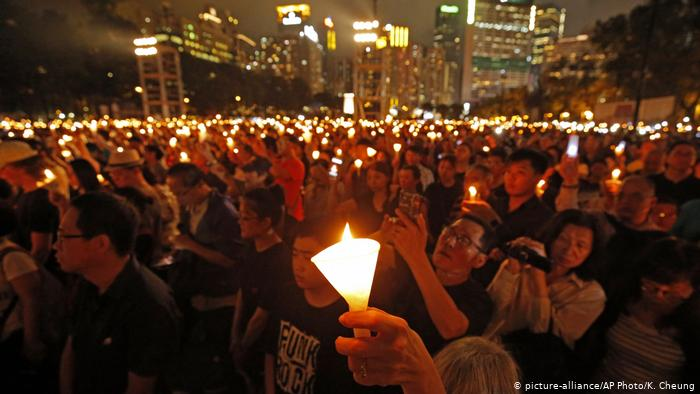
从1990年开始，每年6月4日，烛光都会照亮维园，哀悼六四事件的死难者。今年，眼看《逃犯条例》很可能在七月前通过，港人的危机感格外浓烈，擔心這個被稱為「送中條例」的法律進一步紧缩香港的自由空间。香港支联会在晚会前即估计，今年出席人数很有可能创下新高。
晚会晚上八时开始，但是在会前一个小时，已经有大批民众提前进场，一直到大会开始40分钟之后，仍有许多人从外围湧进场。大约在晚上九时左右，参与民众已经坐满6个足球场，并延伸至附近草皮。在大会宣布6个足球场、行人路、篮球场以及草地均已爆满之后，警方设下铁马要行人绕道。支联会亦在台上呼吁民众同样热情的参与本週日（6月9日）的「反送中」游行。
香港支联会估算，今晚参加晚会的人数多达18万人，多过去年的11.5万人。香港警方则宣称今年统计为3.7万人，超过去年的1.7万人两倍。无论是哪方提供的数字，可以确定的是，今年的参与人数是伞运后最高，也是仅次于二十周年20万人参与的纪录。
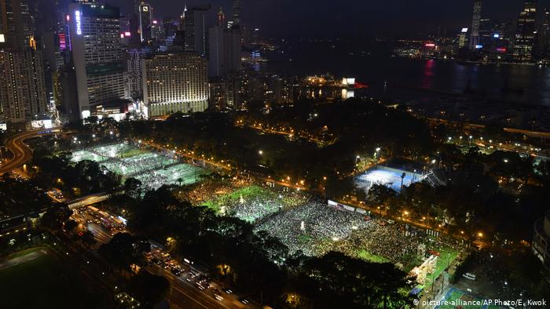
（维园的六个足球场都被悼念民众塞满）
以往的烛光晚会，偶然會请到八九民运人士如方政或熊炎等当年的参与者出席並上台发言。今年，上台发言者皆是香港人，例如大专时曾经上北京声援的李兰菊与歌手黄耀明。日前，八九民运领袖之一封从德尝试入境香港，希望出席六四晚會，却被原机遣返出发地日本。
李兰菊在晚會上分享当年情况，她目睹信号弹画过黑夜，远方传来枪响。有人拿着同伴的血衣告诉她与同学，军队正在对人民开枪。 她在迟疑是否离开之际，一名医生劝香港学生上救护车，着他们离开天安门广场，告诉全世界六四当晚的事。她最后高呼「拒绝遗忘、拒绝黑暗、选择光明」作结。
随后，歌手黄耀明上台说，他在答应支联会李卓人献唱之前，其实心里也需要思考调整一下，才能站上舞台。他坦承自己曾经在1989年参与「民主歌声献中华」，需要承受的包袱较少。他引用新作《回忆有罪》的歌词「回忆即使有罪，真相怎么敢无言，历史假使有人定被发现」。他认为，六四事件启蒙了他那一代人，希望可以阻止当年杀害市民的「巨兽」进入香港，攻击香港的下一代。他并呼吁港人6月9日上街反对「送中条例」，阻止「巨兽」击港。
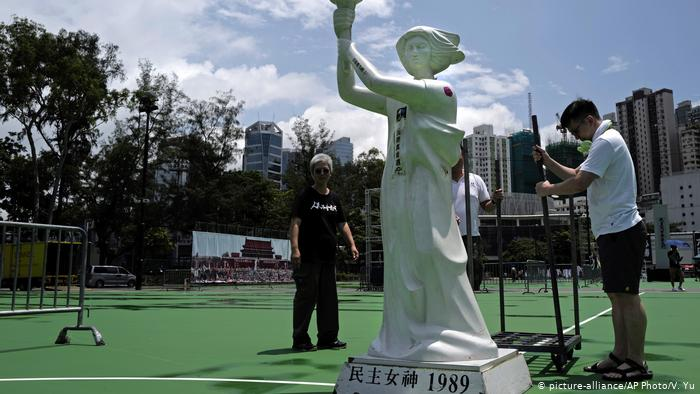
（曾经现身在天安门广场的民主女神像现身维园）
英国媒体BBC报导，今年香港维园的烛光晚会按照往年惯例，有献花、默哀、致悼词、诵读大会宣言、全场演唱民主歌曲、播放「天安门母亲」成员录像讲话等环节。BBC、香港苹果日报報導，多位来自中国内地与会的民众匿名受访稱，他们透过学校以外的管道知道六四的存在，钦佩香港愿意纪念六四。
港媒香港01报导，香港支联会主席何俊仁在会后表示，18万人参与集会，反映香港人「以记忆战胜遗忘、以勇气克服恐惧」。记者问他今年的人数攀高是否与送中条例有关？他说虽相信有关，但是参加晚会的民众主要还是以悼念被镇压的市民为主。
......
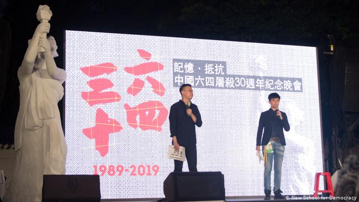
（台湾纪念六四事件的晚会，民主女神像亦出现在台上。昔日太阳花学运领袖之一林飞帆担任主持人）
......
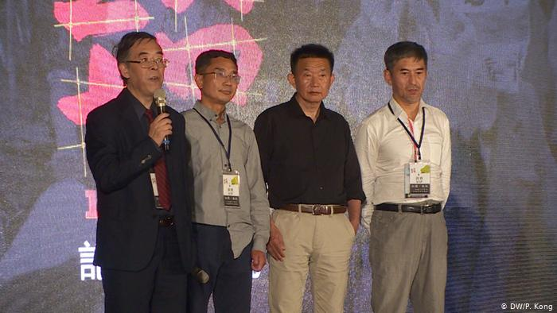
（现身台北的六四亲历者有四人，左起：最后退场的吴仁华、吴祚来，堂弟被杀害的郝建，以及前戒严军官李晓明）
六四戒严军官李晓明接着上台说，虽然自己没有开任何一枪，没有伤害平民百姓，但是軍人这个身份仍始终是个凶手的角色。他一度不能言语，哽咽着说，他希望可以代表自己或其他有良心的士兵，向六四难属表达歉意。他接着说：「三十年过去了，我觉得好像发生在昨天。 我为什么站出来说话，我已经是澳大利亚公民了，我没有任何好怕。三十年来在人类历史上是很短暂的，但是作为一个人的历史是很长的，很多人已经淡忘了，包括我的孩子。今天我说出来这个历史，站出来就是要更多的人，我的后代，包括现在在场的所有人，不要忘记这个六四八九运动事件，我也希望有更多机会站出来，把这个历史展露出来。 」
......
◇《台湾两千人出席六四纪念晚会 戒严军官撒泪忏悔 @ RFA/自由亚洲电台》
（编程随想注：以下是此文的摘录和部分照片）
华人民主书院等多个民间团体六月四日晚间在台北中正纪念堂自由广场，举办“记忆·抵抗 —— 中国六四事件三十周年”纪念晚会，前戒严部队军官李晓明致词时激动落泪并忏悔。台湾的副总统陈建仁也出席了晚会。这是第一次台湾有副总统出席六四纪念晚会。
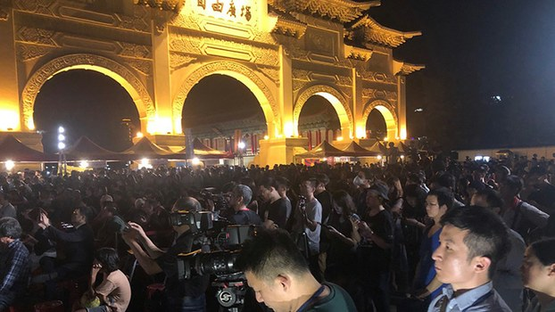
（台北六四三十周年纪念晚会。记者夏小华摄）
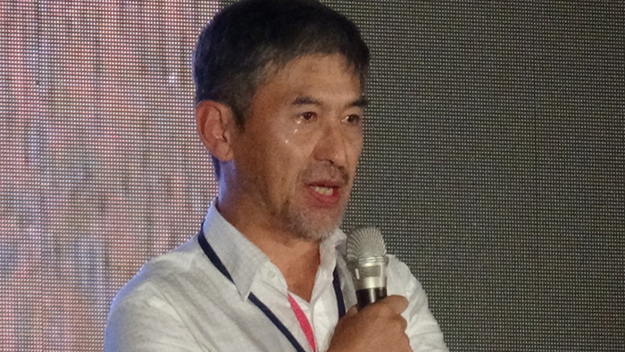
（1989年北京戒严时身为军官的李晓明在台北六四晚会中洒泪忏悔。记者夏小华摄）
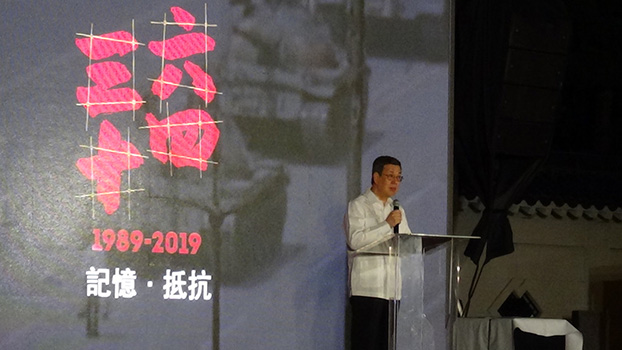
（台湾的副总统陈建仁出席台北六四三十周年纪念晚会。记者夏小华摄）
......
◇《各国政府悼念“六四”三十周年 呼吁北京当局公布真相 @ RFA/自由亚洲电台》
周二是六四事件三十周年，西方各国政府近日纷纷对事件受害者表示哀悼。他们除了呼吁北京当局公开真相之外，还敦促中国政府停止对少数族裔和异见人士的迫害。
在“六四”事件三十周年纪念日到来之际，各国政府机构近日纷纷发布声明，以表达他们对这起民主运动死难者的关切以及对中国政府人权记录的持续担忧。
美国国务卿蓬佩奥（Mike Pompeo）周一发表声明说，美国向这场于6月4日结束的“中国人民英勇的抗议运动致敬”，并对痛失亲人的家庭深表痛惜。他说，六四事件之后的三十年间，美国长期希望中国能够融入国际体系，营造一个更开放的社会。但中国政府直到今天仍在肆意践踏人权。声明特别提到了新疆，表示当局关押了100多万名当地穆斯林，试图扼杀他们的信仰。
蓬佩奥敦促中国政府“完整、公开地说明”六四事件中遇难或失踪者的下落，并释放所有因争取人权自由而被关押的相关人士。
另外，美国共和党议员卢比奥（Marco Rubio）、民主党议员梅南德兹（Bob Menendez）等六名美国参议院外交委员会成员周二提出议案，谴责中国政府对人权自由愈演愈烈的打压，以及对公民的大规模监控。
卢比奥说，我们纪念天安门镇压不仅是为了铭记历史，也是为了时刻意识到，当中国人民有集会、言论、行动自由的时候，他们会呼吁自由、民主和政治改革。他说，三十年过去了，自由世界正面临一个越来越嚣张的北京当局。它不但在国内压迫公民社会的空间，也在对外输出它的威权主义模式。
议员们要求中国政府停止威胁流亡海外的六四事件参与者，并允许他们安全地重返中国。他们还要求当局停止对律师、活动人士等中国维权群体的迫害。
（2019年6月4日，美国华人在纽约街头纪念六四三十周年。美联社）
欧盟委员会副主席、外交与安全政策高级代表莫盖里尼（Federica Mogherini）周二发表声明，呼吁中国政府承认六四事件的镇压事实，保障因此入狱的公民的正当法律程序，并尊重与此相关的悼念活动。
欧盟还希望中国政府立即释放在押的人权卫士、维权律师，包括黄琦、高智晟、戈觉平、王怡牧师、徐琳、陈家鸿等人。
英国外交大臣侯俊伟（Jeremy Hunt）周二表示，过去三十年间，中国政府签署了一系列联合国人权文书，但中国民众仍然无法在国内享有和平抗议权。英国持续敦促中国政府遵循宪法和国际法，尊重公民的结社、集会、言论等基本人权和自由。
加拿大总理特鲁多（Justin Trudeau）在周二也表示对中国人权纪录的关切。他说，加拿大外交部不久也会就六四纪念日发布声明。
◇《美国务卿发表六四30周年声明 向中国人民英雄致敬 @ VOA/美国之音》
（编程随想注：以下是声明的全文）
On June 4, we honor the heroic protest movement of the Chinese people that ended on June 4, 1989, when the Chinese Communist Party leadership sent tanks into Tiananmen Square to violently repress peaceful demonstrations calling for democracy, human rights, and an end to rampant corruption. The hundreds of thousands of protesters who gathered in Beijing and in other cities around China suffered grievously in pursuit of a better future for their country. The number of dead is still unknown. We express our deep sorrow to the families still grieving their lost loved ones, including the courageous Tiananmen Mothers, who have never stopped seeking accountability, despite great personal risk. The events of thirty years ago still stir our conscience, and the conscience of freedom-loving people around the world.
Over the decades that followed, the United States hoped that China’s integration into the international system would lead to a more open, tolerant society. Those hopes have been dashed. China’s one-party state tolerates no dissent and abuses human rights whenever it serves its interests. Today, Chinese citizens have been subjected to a new wave of abuses, especially in Xinjiang, where the Communist Party leadership is methodically attempting to strangle Uighur culture and stamp out the Islamic faith, including through the detention of more than one million members of Muslim minority groups. Even as the party builds a powerful surveillance state, ordinary Chinese citizens continue to seek to exercise their human rights, organize independent unions, pursue justice through the legal system, and simply express their views, for which many are punished, jailed, and even tortured.
We salute the heroes of the Chinese people who bravely stood up thirty years ago in Tiananmen Square to demand their rights. Their exemplary courage has served as an inspiration to future generations calling for freedom and democracy around the world, beginning with the fall of the Berlin Wall and the end of communism in Eastern Europe in the months that followed.
We urge the Chinese government to make a full, public accounting of those killed or missing to give comfort to the many victims of this dark chapter of history. Such a step would begin to demonstrate the Communist Party’s willingness to respect human rights and fundamental freedoms. We call on China to release all those held for seeking to exercise these rights and freedoms, halt the use of arbitrary detention, and reverse counterproductive policies that conflate terrorism with religious and political expression. China’s own constitution stipulates that all power belongs to the people. History has shown that nations are stronger when governments are responsive to their citizens, respect the rule of law, and uphold human rights and fundamental freedoms.
◇《六四事件三十周年前夕 蔡英文在总统府接见中国民运人士 @ RFI/法广》
（编程随想注：以下是此文的摘录）
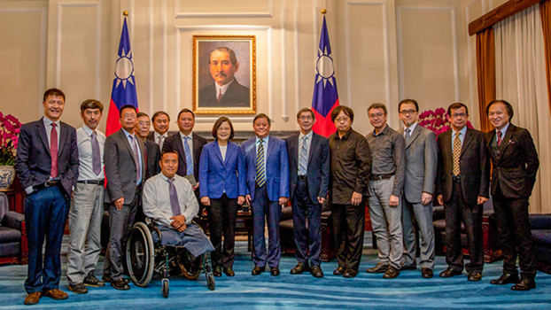
自从1989年6月4日天安门事件以来，在台湾的中华民国领导人，从来没有在「六四」前夕接见大陆民运人士的前例。但今年，台湾总统蔡英文在5月23日打破这个长达30年的顾忌，在总统府接见「华人民主书院」访问团的成员。
王丹是以「华人民主书院」董事的身分与蔡英文会晤，同时会见的还包括流亡的民运人士王军涛、周锋锁、方政，维权律师滕彪和历史学者吴仁华等。
蔡英文在接见的时候说，在「六四」天安门事件三十周年前夕，华人民主书院在台湾规划包括研讨会、展览及「六四」纪念晚会等一系列活动，再一次提醒台湾人历史上所曾发生过的事情，也提醒中华民国民主的可贵。
......
这场研讨会的名称是「六四事件三十周年─中国民主运动的价值更新与路径探索研讨会」，主办的单位是「华人民主书院」与「香港市民支持爱国民主运动联合会」，简称「支联会」，会议共两天半，当年八九民运参与者与研究者齐聚一堂，重新还原当年现场、讨论未来中国情势。没错，六四的纪念研讨会都在香港举办，这是首度大规模移师台湾。
为什么要移到台湾举办呢？「华人民主书院」校长陶君行说，很如果在香港举办，有三分之一甚至二分之一的与会者都来不了，比如王丹、吾尔开希、封从德、王希哲、杨建利等民运人士，他们大多数有被香港拒绝入境的前例。而在雨伞运动以后，被拒绝入境香港的，除了民运人士外，又扩大到包括部分台湾的公民运动人士。当然陶君行没有提到的是，台湾目前由主张台独的民进党执政，已经是全球华人对抗中国的最大力量。
◇《“天安门母亲”祭奠30年前遇害的子女 @ WSJ/华尔街日报》
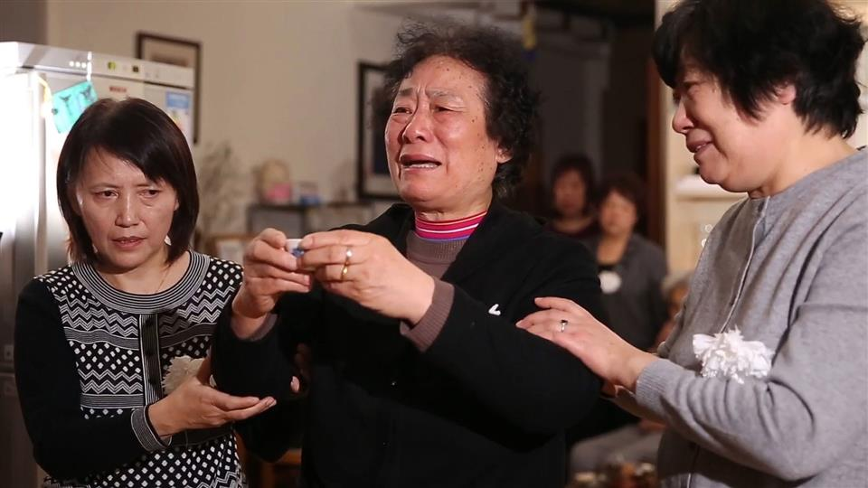
今年3月，在一次纪念“六四事件”30周年的活动上，遇害者的母亲及其他亲属聚在一起，悼念逝去的至亲。视频中，一位母亲说：“我们一定要给你们说法。”名为“天安门母亲”的运动由127名天安门事件遇害者的亲属发起，他们将1989年中国共产党镇压民主抗议者的流血事件称为“六四大屠杀”，一直在高压之下坚持为该事件的遇害者平反。该视频由中国人权非政府组织提供，发布于《华尔街日报》社论版。
图片来源：Human Rights in China
◇《民运三十载 香港六四纪念馆重新开馆 @ 德国之声》
（编程随想注：以下只贴出照片）
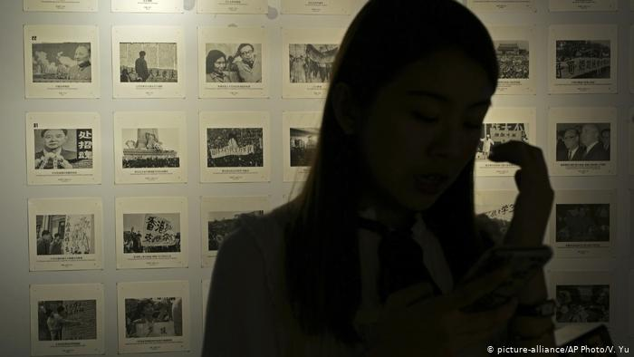
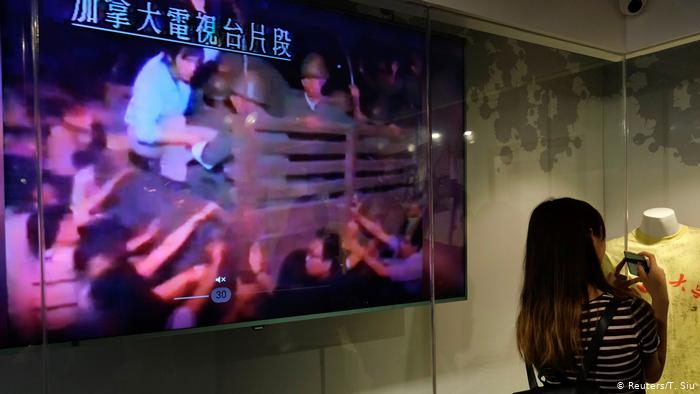
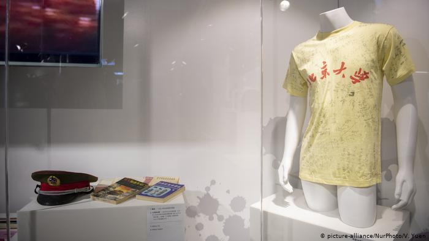
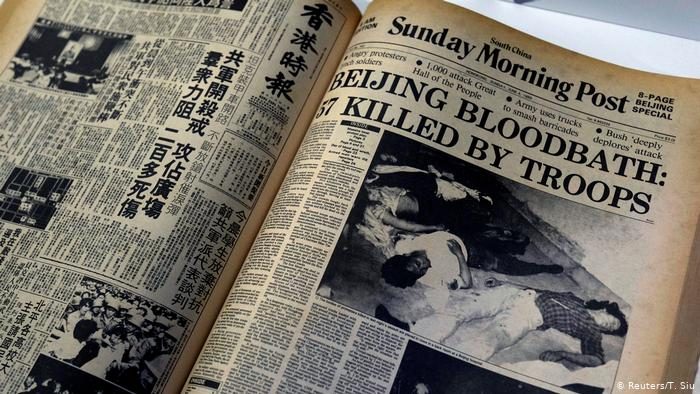
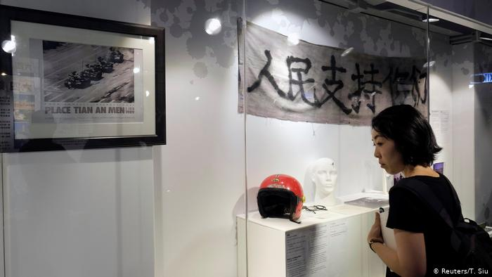

★维稳系统如临大敌
◇《天安门广场六四祭日异常紧张 北京维稳十万小心 @ RFI/法广》
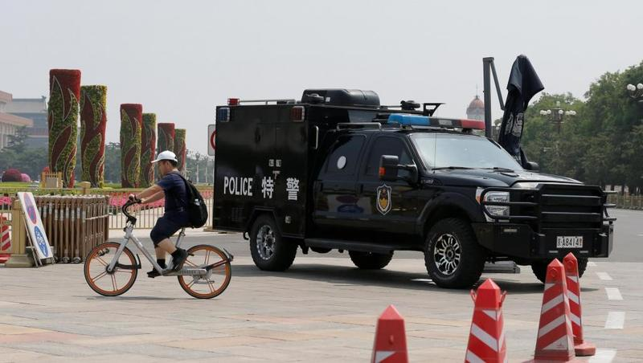
中国迎来89六四30周年正日子，尽管中国官方一段时间以来已经未雨绸缪严防六四纪念突发事件与失控，但北京今天显现非同寻常的维稳措施以及严密防范。法新社发自北京的消息形容北京尤其是天安门广场是非常超级别监控。北京一位30多岁的男子回应路透社采访说从来没有听说过六四。
据法新社说，中国今天到处如临大敌。中国官方将六四字眼与六四相关的形似完全消灭，媒体，电视，网络，文字，图像所有空间都完全封堵禁止六四，但中国当局的维稳监控措施却显示六四好像无处不在。
法新社一名摄像记者凌晨前往天安门广场拍摄每天如仪的升国旗仪式，但被广场守卫阻拦，并被告知需要特殊办公室的特殊批文才能进入广场。
中国官方在六四30周年敏感的日期到来之前，就采取措施，严密监视敏感人员，将维权与持不同政见人士以及被视为社会负能量危险人员请出北京被旅游。
法新社说，中国官方媒体今天完全对六四装聋作哑，噤声禁言。唯有环球时报昨天隐喻说，对那场政治风波的处理，让中国获得免疫，可以成功处理任何抗议动荡。
据中央社今天也报道，六四30年北京如临大敌，外媒禁拍天安门升旗。4日是六四天安门民主运动30周年，北京当局如临大敌，在天安门广场周边层层警戒。
该报道说，今天是六四天安门民主运动30周年，北京当局如临大敌，在天安门广场周边层层警戒，据美联社报导，外国记者被禁止进入广场拍摄每天都有的升旗仪式。
该报道说，中国政府今天在30年前发生血腥镇压民主示威的天安门广场加强警戒，除了在广场周边增设检查关卡，还关闭了一些街道。外国记者则被禁止进入天安门广场拍摄每天都有的升旗仪式。
中央社说，六四事件30周年之际，全球各地都有相关悼念活动，但中国官方禁止国内任何形式的纪念活动，网上和社群媒体平台全面封锁任何与六四事件有关的言论。
中国外交部发言人耿爽昨天在例行记者会回答外媒有关六四事件的问题说，当年的“政治风波”早有结论，中国70年来发展取得的巨大成就，充分证明中国选择的发展道路完全正确。不过，中国外交部网站会后刊出的记者会文字记录中，有关六四事件的所有对答一律遭删除。
报道指路透社记者今天在天安门广场附近采访了一些行人，一名30多岁的男子表示从未听说过六四事件，另一名年纪稍大的女士表示知道六四，但忘记了今天是六四30周年的日子。
◇《六四30周年——中国还在展现强大“忘却”能力 @ BBC/英国广播公司》
（编程随想注：以下是此文的摘录）
关于1989年在北京的那一场事件，官方没有任何纪念的活动。不过这句话虽然属实，但却过份中庸。
真相是，在天安门广场发生的一切，令这个国家每一年都会采取大规模行动，而这种行动或许可以更确切地称之为“忘却”。
在6月4日来临前的这一个星期，世界上最大的审查机器进入了高负荷运转——自动运算法加上数以万计的人力审查员形成一个巨大的拖网，在互联网上清理任何有关天安门事件哪怕最隐晦的信息。
被认为以太激进的方式逃避审查的人可能会被关进监狱——此前有一群人试图用一个产品商标来纪念这个日子，结果被判处最高三年半徒刑。
仅仅是在社交媒体“推特”（Twitter）上转发相关的照片也能令你被扣留——而推特是一个被屏蔽的平台，大多数中国网民根本上不去。
几个月前，我亲自见证了当局为确保中国民众绝不参与这件事的公共讨论或者纪念活动，行动能够彻底到何种程度。
在中国传统的清明节——人们为已故亲人扫墓和祭奠的日子——BBC安排了与一名老太太会面。她的儿子当年就是在第一批军队开进城之后不久，在天安门广场北边被子弹射穿头颅。
像以往的每一年一样，81岁的张先玲计划带着鲜花去那个宁静的小墓园。当年19岁的王楠就葬在那个靠近颐和园的地方。
但是我们发现，墓园到处都是安保人员，他们在监视这个家族墓碑。
我们被身穿制服的警员查问，他们检查我们的护照和记者证件，也记下了我们的信息。
而张先玲女士则在警察的包围下进入和离开墓园，以确保她全程远离记者。
BBC的存档资料当中，包括一份引人注目的纪录。在那一系列的事件当中，王楠的死只是其中的一小部分。
那段影片，每一帧都体现着拍摄者的英勇。影片显示，士兵在前进，手上的武器举在齐人高的位置，背景则是人群的剪影和燃烧的装甲车。
影片还拍下了惊慌的抗议者，他们奋力骑着自行车，或者走着，将中枪染血的伤者抬往医院。
......
◇《六四期间微信封账号，阻止敏感数额的汇款 @ VOA/美国之音》
媒体报道说，中国社交媒体微信六四期间吊销众多账号，朋友圈遭到广泛的砍伐，就连敏感数额的汇款也被封杀。
法国国际广播电台7日报道说，中国许多微信群和个人账户六四期间突遭销号，被网民称为“微信大屠杀”。也有用户抱怨说，敏感日期间微信朋友圈也“被砍伐得七零八落，有的干脆连根拔除。” 有网友分析，这可能跟网友群传送的一些影射中共领导人习近平的文章有关。
英国广播公司BBC驻北京记者麦笛文（Stephen McDonell ）就是被封杀的对象之一。他7日发表文章说，当时他正在香港报道六四纪念烛光晚会，通过微信上传了一些照片，很快账号就被关闭。他试图重新登录，一条微信信息说，“此微信账户涉嫌散布恶毒谣言，被临时关闭。”麦笛文第二天被迫按照要求，将手机摄像头对准自己的脸部，然后用中文念了一些数字，让微信记录自己的影像和声音后才获准重新使用。他在文章中说，微信是中国最有用的社交平台，但也成为中国政府最强大的社会控制武器。
除了吊销异议人士的账号外，微信还竭力封杀敏感信息的传递，就连敏感数额的汇款也不放过。《华尔街日报》报道说，有些微信用户抱怨说，他们在6月4日无法用手机支付某些特定数额的款项，也无法发送同样数额的网络红包。这些数额包括6.4元、64元、64.89和89.64元等。用户如果发送这些数额的汇款或红包，就会收到交易失败、请随后再试的提示，但其它数额的付款可以顺利通过。报道说，上述“敏感”数额的微信支付6月6日得以恢复。
有报道说，类似的事情过去也发生过。2012年6月4日，上海股市就下跌了64.89点，着实让中国网络监督人员手忙脚乱。
★真理部的洗脑
编程随想注：
经典的政治小说《1984》里面有句名言——
谁控制过去，谁就控制未来；谁控制现在，谁就控制过去。
Who controls the past controls the future; who controls the present controls the past.
◇《我对自己国家的历史一无所知 @ 纽约时报》
（编程随想注：引文中的粗体是俺标注滴）
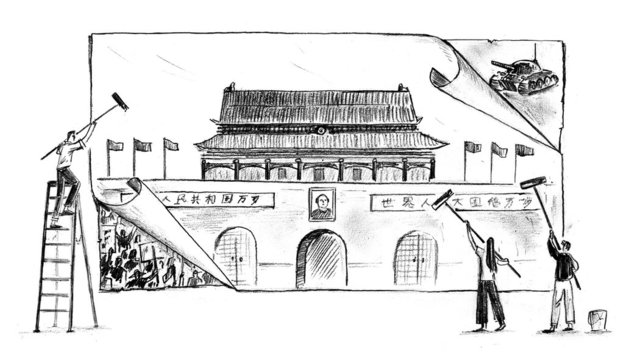
大约两年前，我在澳大利亚一所大学做关于天安门广场历史遗产的演讲，一位年轻的中国学生在问答环节中举手。“我们为什么一定要回顾这段历史？”她问道。“你为什么觉得它对现当代的中国，尤其是我们年轻一代有帮助？你认为这会损害中国政府所说的和谐社会吗？”
她没有质疑1989年6月4日发生的事实。她质疑的是知识本身的价值。自从我写了一篇关于北京成功将1989年杀戮事件从集体记忆中抹去的文章以来，我经常听到中国学生辩解说，政府的行为是必要的。但这次的观点不同。这名学生巧妙地避开了她的政府对本国人民实施的暴力，同时内化了社会稳定压倒一切这个中共立场。演讲结束时，另一名中国学生问道，关于6月4日的知识是否会对“我们的完美社会”构成危险。
对于66万名留学海外的中国学生来说，第一次偶然发现这些中国历史中隐藏的事件，可能会让他们异常不安，就好像世界轴心突然错位。有些人会对这些发现感到非常不安，以至于他们更容易将其视为旨在颠覆共产党的西方阴谋。
这些留学生属于中国的后天安门一代，他们成长于爱国主义教育的时代，这种教育强调一个世纪以来中国在西方和日本殖民统治下蒙受的国耻。历史已经成为一种意识形态工具，某些事件因展现了共产党最好的一面而受到颂扬，另一些事件则被根除和抹去。贯穿其中的叙事是中国由抗拒外侮的力量驱使，实现现代复兴。这一切都是为现任领导人的执政合法化服务。
这个民族复兴故事的其中一个版本，体现在当今受欢迎的英雄身上，尤其是像中国最大的公司之一阿里巴巴的创始人马云这样的商人。他出身贫寒，靠着为外国游客提供免费导游服务学习英语，他代表了一个从赤贫到富有的故事，反映了中国经济的崛起。
另一种版本是典型的共产主义英雄，他们的事迹充斥着教科书。比如“狼牙山五壮士”，他们是1941年日本侵华期间的中国八路军士兵。即将被日本人俘虏时，他们选择了跳崖，其中三人失去了生命。前不久，一位历史学家对这个传说提出质疑并遭到起诉，法院做出了不利于他的判决，认为这个故事所反映的民族情感和历史记忆是现代中国社会主义核心价值观的重要组成部分。换言之，历史被明确地用于政治目的，而历史研究可以被视为诽谤。
这种国家认可的叙事中不会提及人民解放军向自己人民开火的行为。关于1989年的记忆之战，如今已经成为一场全球性的战争，在课堂、纸媒和网络上展开。学术期刊和科技公司对6月4日的相关内容进行审查。无论这是在北京的直接压力下发生，还是商业原因之下先行的自我审查行为，这都无关紧要。在最近的一个案例中，一家在美国和加拿大雇佣了6万名教师的中国在线教育公司解雇了两名美国教师，原因是他们在中国和学生们讨论天安门事件和台湾问题。随着中国企业在海外收购新闻媒体，它们在天安门事件周年纪念和更广泛的人权报道等敏感问题上已经拥有直接的影响力。
在某种程度上，向中国年轻人灌输功利主义历史观，比审查制度本身更有力。一旦人们接受了历史必须为国家利益服务的观点，他们就不会再有学术探究的精神，甚至没有闲来无事的好奇。
当然，仍然有这样一些年轻人，他们的独立意识击败了北京的意识形态教育。偶尔会有人在谈话结束后悄悄走到我身边，轻声问我，该怎样处理这些让他们倍感沮丧的新知。曾有一个人站在满屋美国人面前说道：“我在中国生活了18年，现在我意识到我对自己国家的历史一无所知。我上的是最好的学校，管理最完善的学校，但是我什么都不懂。”
尽管所有国家都在构建自己的民族叙事，但很少有哪个国家能与中国的强大力量相匹敌。中国的爱国主义情绪十分强烈，而且毫无疑问，它有能力惩罚那些公开质疑官定历史的人。
危险在于，这些策略非常有效，以至于中国的历史正在一分为二：国内的共产党叙事，以及海外那些黑白没那么分明的版本。这种分歧可能无法弥合。
◇《佩洛西：人民拥有言论自由符合中国利益 @ VOA/美国之音》
美国国会众议院议长佩洛西（House Speaker Nancy Pelosi, D-CA）在六四事件30周年当天接受媒体采访时表示，让中国人民拥有言论自由符合中国国家利益。
“我期望能中国能实现政治改革，让人民拥有言论自由、通讯自由对中国是有利的，这也符合中国利益，”佩洛西在回答美国之音提问时说。
此前，佩洛西出席了美国国会暨行政当局中国委员会和汤姆.兰托斯人权委员会共同召开的天安门事件30周年听证会，并以证人身份作证。
佩洛西在听证会上表示，天安门事件这段历史永远不会被遗忘。
“如果你在监狱里，对你最痛苦的惩罚方式之一就是告诉你没有人会记得你，没有人会记得你为什麽在这里，或者你在这监狱里，”佩洛西在听证会上说。“我们要确保这些被关押的政治犯知道，我们相信他们能得到消息知道，他们没有被遗忘，知道在美国国会，像各位这样的重要领导人今天都聚集在这里，念着他们的名字，向中国当局写信，纪念他们的牺牲，不仅是他们个人的牺牲，还有为全世界民主所作的牺牲。”
佩洛西也表示，他还希望特朗普总统能将人权、民主等议题纳入与中国进行的贸易谈判。
在接受媒体采访时，佩洛西还批评了中国对新疆维吾尔穆斯林等少数民族的打压。
佩洛西说：“（中国政府做法）令人难过，我们也呼吁国际社会对中国的穆斯林少数民族进行发声，我们一直以来都在谈尊重宗教自由，无论是基督徒、犹太教、穆斯林、印度教等所有世界上的宗教，中国政府对维吾尔人所做的事情不在人类文明行为的范围之内，包括关押了数百万计的人在监狱里，就只是因为他们的宗教信仰。”
★六四的后续影响
◇《“六四”30周年，中国民主希望何在 @ 纽约时报》
（编程随想注：以下是此文的摘录，引文中的粗体是俺标注滴）
“六四”之后，中共的意识形态彻底破产，共产主义（不是中共现在的挂羊头卖狗肉的特色理论）除了少数极左派外，连党员都已不信。它也没有民主选举，剩下的唯一一根合法性支柱是由改革释放的经济活力及由此带给民众的福利改善。
经济高增长的主要受益者是中共各级官员及和他们有密切联系的各类集团，虽如此，但在过去毕竟孕育了一个庞大的中产阶级群体，所有人的生活在绝对意义上都得到改善，中国的国际地位也有大幅提高，民众的民族自豪感增强。因此，在过去40年里中国虽发生过大大小小的风波，但中共都挺过来了，原因就在于它有能力为民众提供绩效合法性以维持统治。
然而现在经济高增长不再，未来想要达到过去的年均增长水平，几乎是不可能的。一旦经济发生持续衰退——而这种情况是比较可能出现的——它所能提供给民众的福利势必减少，失业增加。在持续衰退的经济和政治形势下，人民对习近平政权的不满及其抗争也会趋于激化，其统治成本会越来越高，绩效合法性不断递减，直至完全消失。
中共改革以来的政策选择和统治策略，是建立在“文革”和“六四”这两个历史的教训的基础上，前者使中共认识到，不发展经济不行；后者使中共认识到，搞民主选举即把合法性放在程序正义上也会葬送自己。与此同时，民众对中共的认识和反抗程度也是建立在这两个基础上的，由于多数人或经历“文革”，或参与、目睹过“六四”，有对饥饿、贫困和中共镇压的历史记忆，所以对中共强调的稳定有认同和接受的一面，对中共的压迫，虽有不满，但不愿或不敢付诸行动反抗。
但这种情况随着绩效合法性的持续流失将会改变。当“90后”“00后”成为社会的主角，由于他们成长于一个物质财富丰富的时代，享受全球化的便利，有国际视野，因此，他们不会视现有的财富为中共所赐，而是对此抱着理所当然的心态。他们也没有对中共恐惧的历史记忆，对贫困的耐受力也比不上父辈，若中共无法满足他们更高的需求，甚至使他们从富裕重新回到贫困，那么，他们对中共的暴政不会像父辈那样在“六四”以后选择沉默和顺从，其反抗力度要激烈得多。
当然会有人说现况不是这样：如今绝大多数年轻人对政治很麻木、不反动；或者虽对政权不满，但认为还可接受；也有不少人很爱国，特别是海外留学回来的，越高大上越专心追求自己利益等。不否认此类情况普遍存在。可是也要看到，社会对政权不满的情绪亦普遍存在，人们之所以不愿或不敢反抗，是因为意识到个体反抗的代价，从这个意义说，他们在等待时机。另一方面，90—00群体目前最大的尚不到30岁，很多还是学生，但当这一代人到中年，上有老下有少，挑起生活重担后，假如届时经济恶化到多数人入不敷出，生活水准突然间急剧下降，很难想象他们对现状会像其父辈一样逆来顺受。
......
复旦大学历史教授葛兆光先生去年11月在香港大学的一次演讲中谈到清从所谓的康乾盛世转向衰亡的原因时，归结为三点：
一是帝国庞大疆域和复杂族群，造成控制成本过大；
二是思想文化和意识形态无法面向世界，越来越凝固和僵化；
三是皇权或国家权力过于集中，封杀了变革的可能性。
我认为是非常到位的，简直是为当代中国和中共开出的诊断。
◇《六四造就了中产阶级的分裂人格 @ 德国之声》
（编程随想注：以下是此文的摘录，引文中的粗体是俺标注滴）
"整整30年前的这场六四事件，标志着一种全新统治模式的开端：经济上的自由化、政治上的高度压制。"在研讨会的一开始，德国联邦政治教育中心（BPB）的汉学家霍夫史泰德（Christoph Müller-Hofstede）就对六四后的三十年进行了高度概括。他认为，整个历史进程的吊诡之处就在于，中共当局的这种治理模式，至少从经济方面来看，"居然取得了令人惊奇的巨大成功。也因此，不少中国人，也有许多西方人士，如今都在问：当年的这场镇压，是否真的有其必要性？"
......
美国汉学家林培瑞（Perry Link）随后接过了霍夫史泰德抛出的这个话题，认为当年中共当局在完全可以采取高压水枪等低暴力清场手段的情况下，却选择了暴力镇压这一方式，其目的就是要震慑全国的民众，"而这种震慑也确实在之后的几十年间发挥了作用，造就了当今中国中产阶级的分裂人格。"
林培瑞认为，当年镇压形成的震慑效应，其最大的后果就是推翻了毛泽东时代依靠共产主义理想来实现统治的政治模式。"邓小平的模式就是摒弃理想主义，让大家都能挣钱，然后不时的煽动一下民族主义情绪。"
他非常不赞同"为了稳定、镇压是必要的"这种说法，而是指出：如果要实现一些变革，我们就必须接受短期内可能出现社会上的某些动荡。
......
不莱梅高等学院的何珊卓（Sandra Heep）长年研究中国经济问题。她认为，在震慑效应下，中国政府与中国民众达成了心照不宣的"社会契约"，即政府尽力让宏观经济、生活水平持续增长，物质上得到满足的民众则不再过多追求政治上的话语权。"我们可以看到，如今这种社会契约依然有效，国际民调机构的调研显示，大部分中国民众对政府的工作都表示满意。"
何珊卓认为，1989年爆发的天安门民主运动，很大一部分的诱因正是当时国内的一系列经济问题，其中包括改革开放并没有让城市居民明显获益、"价格闯关"造成通胀率居高不下、"双轨制"带来的"官倒"腐败现象等等。
......
主办方向现场听众以及研讨会嘉宾抛出了第三个问题：今后几年，中国是否会发生大规模的民众抗议？过半听众认为中国民众不会再像1989年那样走上街头进行大规模示威。德国记者李德辉也持类似的观点。他认为，至少在三、五年内，中国政府依然有足够的手段去挖掘经济增长的潜力。"
不过，如果拓展到十年以上的尺度，则很难说。中国需要转变发展模式，还面临中等收入陷阱、中美经贸对抗等一系列重大挑战。如果经济增长停滞，就难以确保民众满意。"
中国经济专家何珊卓也认为，在既有的粗放式增长模式即将到头、中美贸易战雪上加霜的情况下，"社会契约被打破不是不可能。"
◇《六四事件後和老布希一樣誤判北京的，還有整個西方社會 @ The News Lens》
（编程随想注：以下是此文的摘录）
1989年六四慘案爆發後全世界都在看美國如何反應，作為其他國家反應的參考。
本來，多數歐美國家都認為以美國對人權的重視，可能會採取強硬的政策譴責中國的殘暴，不料總統老布希（George H. W. Bush）的態度卻出奇地溫和。據中國記者李文隆的報導：法國歷史學家、冷戰與國際關係研究者皮埃爾・格羅塞（Pierre Grosser），講述了當時外界對天安門事件的反應，以及原蘇聯大部分成員國選擇不流血過渡的原因，他認為美國總統老布希當時對北京的誤判也有關係。
皮埃爾表示，他並不認為天安門事件是蘇聯解體的導火索，但天安門事件的出現使得蘇聯解體採取了和平方式進行自身體制的改變。
1989年發生的天安門事件，中共政府採取了武力鎮壓方式對待以學生為主的民主運動。英國密檔披露，時任英國駐華大使唐納德（Alan Donald）認為「六四」致約2700至3400人死亡，但一名中共國務院官員提供的信息估計平民死亡人數最少為一萬人。
皮埃爾說，1989年天安門事件的畫面衝擊了每個人的大腦，每個國家後來都參照天安門事件，找到了各自的處理方式，不過皮埃爾表示，現在美國傳統思維當中的希望中國走美國模式的想法現在確實消失了。但是1989年人們還是對此抱有希望的。
譬如時任美國總統的老布希對天安門事件的反應非常溫和，老布希認為應該讓中國按照自身節奏來逐步開放。他認為隨著時間，中國會自然更開放，有強大的中產階級，經濟繁榮自然會走向民主。他當時不希望向中國施加過強制裁，但來自美國國會和非政府組織的壓力非常大。
人們常批評老布希太柔和，沒有努力吹改革之風，但皮埃爾表示，這正是老布希的策略：「其實他的文件裡一直有標記著天安門三個字，當他訪問波蘭、匈牙利等國時，他一直勸說這些國家要溫和前進，避免流血。」
皮埃爾列舉了天安門鎮壓發生之後，各國的不同反應：匈牙利等已經大改政治制度的國家，和韓國和臺灣走得很近，並與發生鎮壓的國家分道揚鑣。
波蘭還算溫和，學生運動被封口，雖然沒被鎮壓，但也被阻止對共產黨做更激烈批判。
國際間的溫和反應並沒有達到讓中國和平演變的目的，反而對社會控制更加嚴厲殘暴，直到習近平修憲使自己成為終身職之後，西方國家才死了中國演變成民主國家的這條心。
......
俺博客上，和本文相关的帖子（需翻墙）：
《回顾“六四”》（系列）
《谈革命》（系列）
《每周转载：“六四事件”25周年纪念（【大量】照片和网友评论）》
《每周转载：“六四事件”23周年纪念（网文4篇）》
《处在历史转折点的小人物们——回首80年代的几则往事》
版权声明
本博客所有的原创文章，作者皆保留版权。转载必须包含本声明，保持本文完整，并以超链接形式注明作者编程随想和本文原始地址：
https://program-think.blogspot.com/2019/06/weekly-share-131.html
本博客所有的原创文章，作者皆保留版权。转载必须包含本声明，保持本文完整，并以超链接形式注明作者编程随想和本文原始地址：
https://program-think.blogspot.com/2019/06/weekly-share-131.html